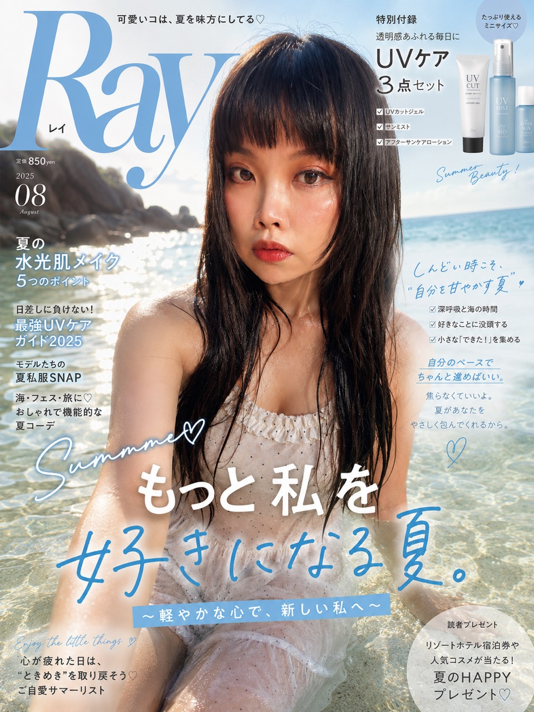

商品內容企劃
商品賣點分析與商品頁行銷文案撰寫。
活動企劃、社群內容及新品上市宣傳素材製作。
整合品牌調性，維持視覺與內容的一致性。
具電商內容端實務經驗，可快速銜接平台後台及商品上架流程。
擁有近 20 年設計相關經歷，從早期的遊戲美術、多媒體動畫，到近年橫跨電子科技、汽機車配件、保健美妝、電商及多媒體傳播等產業，累積豐富且多元的實務經驗。
具備獨立整合完整內容流程的能力，能將複雜零散的產品規格、行銷資訊與行政資料有系統地梳理，進一步轉化為清楚易懂、兼具美感與商業溝通力的內容。
近年持續將生成式 AI 工具導入實際工作流程，提升資料整理、內容企劃與視覺製作效率，同時兼顧細節品質、交期掌握與成品美感。
商品賣點分析與商品頁行銷文案撰寫。
活動企劃、社群內容及新品上市宣傳素材製作。
整合品牌調性，維持視覺與內容的一致性。
具電商內容端實務經驗，可快速銜接平台後台及商品上架流程。
HTML／CSS 網頁切版基礎。
響應式網頁 Responsive Web 概念。
網站版面規劃。
AI 快速生成基本網頁架構（含 JavaScript 動態效果）。
插畫速寫 Procreate。
平面設計排版 Photoshop、Illustrator、Canva。
影音剪輯 CapCut、Premiere 及其他快速剪輯 APP 使用。
AI 提示詞多元風格素材生成。
AI 簡單互動式小遊戲製作。
產品／服務品牌故事構思發想。
將產品包裝成有記憶點的品牌商品。
從網頁設計、產品包裝設計、電商商品描述及商品頁、影音製作、社群經營一條龍作業，品牌風格維持一致不間斷。
CREATIVE EXPLORATIONS

1 / 5